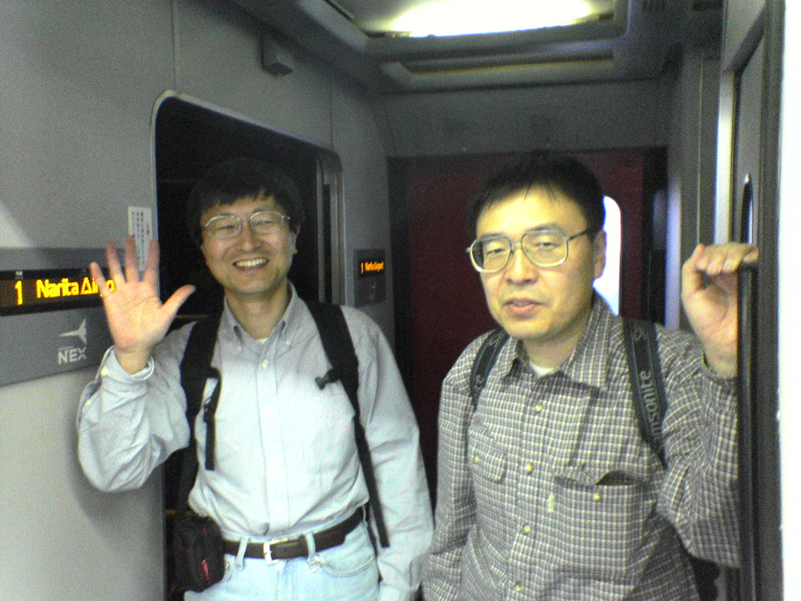
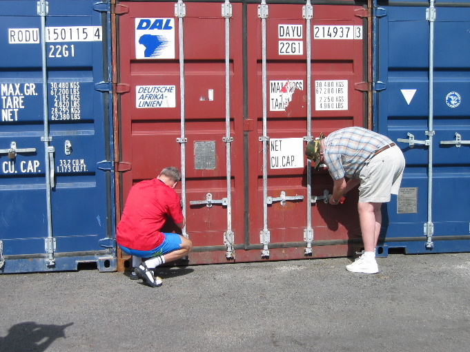
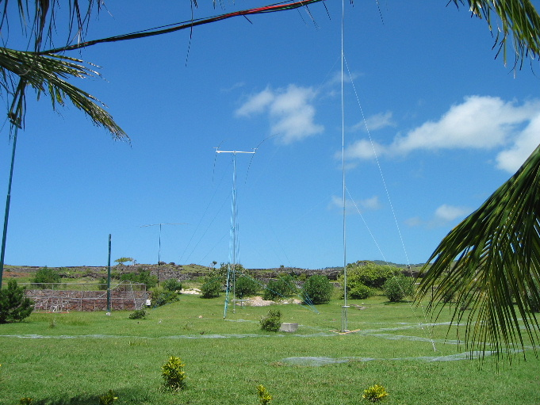
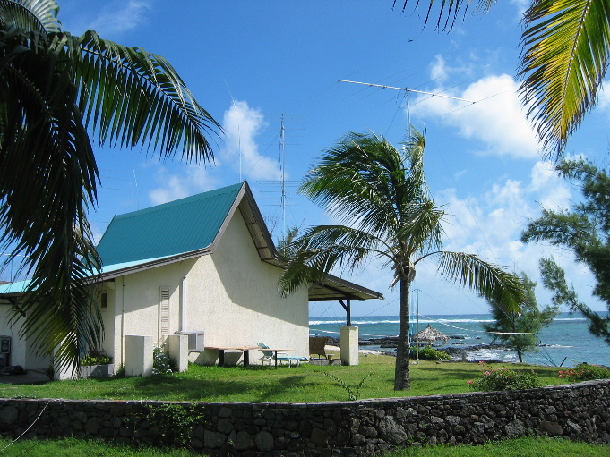
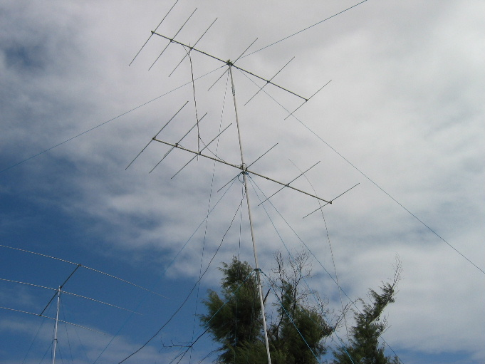
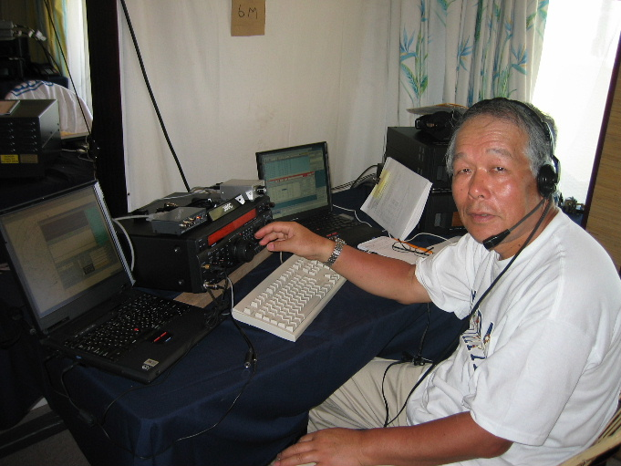

3B9C(Rodrigues Is) Homepage
| 6m Today ! |
[Back Issues Apr.2004]
TIME:UTC(JST-09:00)
Report from JA1RJU (PM95sq)
30.Apr.2004(15:00b)
VK6RSX 06:040- 50.304 CW Beacon
29.Apr.2004(15:00c)
*VK-TV 04:40- 46.172 --
VK8RAS 05:30- 50.0468 CW Beacon
T88JY 08:00 50.140 CW
28.Apr.2004(15:00c)
*BY-TV 07:30- 49.750 --
HL1LTC 08:08 50.110 CW Es strong!
27.Apr.2004(15:00b)
VK6RSX 09:30- 50.304 CW Beacon
VK4KDD/VK6 09:33 50.110 SSB
26.Apr.2004(15:00c)
VK6RSX 08:40- 50.304 CW Beacon
VK4KDD/VK6 09:05 50.110 SSB
25.Apr.2004(15:00c)
VK6RSX 07:40- 50.304 CW Beacon
VK6JJJ 07:55 50.110 SSB
24.Apr.2004(15:00d)
*VK-TV 02:30- 46.172 --
VK8RAS 07:20- 50.0468 CW Beacon
VK6RSX 07:20- 50.304 CW Beacon
VK4KDD/VK6 09:57 50.110 SSB
VK6RSX 09:57- 50.304 CW Beacon
| ◎ 4月28日から5月3日までの予定でFO/M(Marquesas Is)から運用を予定しているJI1JKW & JI1WTFの両局は、 本日(24日)、成田からFO/Mに向かった。Marquesas Isには日本時間の28日の朝に到着の予定。 この時期、6mでのJAとのQSOはかなり難しいと思われるが、 160mなどローバンドの運用も行うので、聞こえていたらCALLして貰いたいとのこと。 |

23.Apr.2004(15:00d)
*VK-TV 03:30- 46.172 --
FK8SIX/B 04:18- 50.0797 CW Beacon
VK8RAS 04:25- 50.0468 CW Beacon
VK6RSX 04:45- 50.304 CW Beacon
FK8SIX/B 09:00- 50.0797 CW Beacon
VK4RTL 09:00- 50.087 CW Beacon
VK4ABP 09:00- 52.347 CW Beacon
VK4CXQ 09:19 50.110/105 CW
C21SIX/B 09:20- 50.038 CW Beacon
VK4BLK 09:46 50.110 CW
VK6RSX 09:50- 50.304 CW Beacon
VK4KDD/VK6 10:08 50.110 SSB
22.Apr.2004(10:00c)
*ZL-TV 02:40- 45.24/25/26--
*VK-TV 03:30- 46.172 --
FK8SIX/B 03:45- 50.0797 CW Beacon
21.Apr.2004(15:00b)
*VK-TV 04:00- 46.172 --
20.Apr.2004(15:00b)
*VK-TV 03:00- 46.172 -- weak
19.Apr.2004(15:00d)
*VK-TV 03:00- 46.172 --
VK8RAS 06:00- 50.0468 CW Beacon
VK4RTL 06:00- 50.087 CW Beacon
VK6RSX 06:30- 50.304 CW Beacon
VK4ABP 06:30- 52.347 CW Beacon
VK8RAS 09:00- 50.0468 CW Beacon
VK4RTL 09:00- 50.087 CW Beacon
VK6RSX 09:00- 50.304 CW Beacon
VK4KDD/VK6 06:20 50.110 SSB
VK4ABW 06:23 50.110 SSB
18.Apr.2004(15:00c)
*VK-TV 05:00- 46.172 --
VK6RSX 06:00- 50.304 CW Beacon
VK4KDD/VK6 09:00 50.115 SSB
17.Apr.2004(15:00d)
*VK-TV 04:00- 46.172 --
VK8RAS 04:50- 50.0468 CW Beacon
VK6RSX 04:50- 50.304 CW Beacon
VK8RAS 09:00- 50.0468 CW Beacon
VK4RTL 09:00- 50.087 CW Beacon
VK4FNQ 09:43 50.110 SSB
VK8RAS 09:55- 50.0468 CW Beacon
VK6RSX 09:55- 50.304 CW Beacon
VK4KDD/VK6 10:15 50.110 SSB
16.Apr.2004(10:00d)
*VK-TV 04:00- 46.172 --
VK6RSX 07:20- 50.304 CW Beacon
FK8SIX/B 08:45- 50.0797 CW Beacon
VK4RTL 09:00- 50.087 CW Beacon
VK6RSX 09:00- 50.304 CW Beacon
15.Apr.2004(15:00d)
*VK-TV 07:00- 46.172 --
FK8SIX/B 07:30- 50.0797 CW Beacon
VK6RSX 07:30- 50.304 CW Beacon
VK4CXQ 07:44 50.110 CW
VK8RAS 08:45- 50.0468 CW Beacon
FK8SIX/B 08:45- 50.0797 CW Beacon
VK6RSX 08:45- 50.304 CW Beacon
VK4ABP 08:45- 52.347 CW Beacon
VK4BLK 09:03 50.110 SSB/CW
VK4WDM 09:13 50.110/130 SSB
14.Apr.2004(15:00b)
|
◎ 今日は45-49MHz帯のTV信号も聞こえない静かなコンデション。 6mでもFBにオープンしていた3B9C(Rodrigues Is)は、約4週間の運用を終え、現地時間の4月12日午前7時42分(03:42z＝日本との時差5時間)でQRTした。 最終的な総QSO数は 153,113だった。80m、40m、30m、17mの各バンドとRTTY、PSK-31の各モードで従来のQSO数の記録を上回る成果を上げた。 注目の6mのQSO数は、3月31日まで運用したJA1RJUによるQSO数1,205に、更に243 QSOが追加され最終的なQSO数は1,448だった。 HF帯では全体的にサンスポット低下の影響でハイバンドでのQSO数は伸びなかったが、 今回の6mのQSO数は予想を遥かに超えた"大成果"となった。 各バンド、モードのQSO詳細は3B9CのWebを参照。 |
13.Apr.2004(15:00d)
*VK-TV 04:00- 46.172 --
VK4RTL 04:10- 50.087 CW Beacon
VK6RSX 06:20- 50.304 CW Beacon
*VK-TV 09:00- 46.172 -- strong !
VK8RAS 09:10- 50.0468 CW Beacon
VK4RTL 09:10- 50.087 CW Beacon
VK6RSX 09:10- 50.304 CW Beacon
VK4RTL 09:10- 50.087 CW Beacon
VK4ABP 09:10- 52.347 CW Beacon
VK4FNQ 09:18 50.110/130 SSB
VK4KDD/VK6 09:31 50.110 SSB
DU1EV/B 09:35- 50.008 CW Beacon
VK4CXQ 09:41 50.110/105 CW
VK6RSX 12:00- 50.304 CW Beacon
12.Apr.2004(15:00d)
*VK-TV 03:00- 46.172 --
VK4RTL 03:40- 50.087 CW Beacon
VK6RSX 04:30- 50.304 CW Beacon
VK4KDD/VK6 06:58 50.110 SSB
VK4KDD/VK6 08:40 50.110 SSB
VK6RSX 08:40- 50.304 CW Beacon
|
◎ 3月20日から運用を開始した3B9C(Rodrigues Is)は、現地時間の12日午前(日本との時差5時間)、
約4週間の運用に終止符を打ち、全ての周波数を"クローズ・ダウン"した。
11日11:13zに総QSO数は150,000を超え、一部の周波数帯ではQSO数の記録を更新する成果を上げた。
総QSO数では2年前の同グループが運用したD68C(Comoros)の168,722には及ばなかった。
QSO数など記録の詳細は間もなく公表される 一行は2日間をかけてアンテナ、機器類を撤収、約25Km離れた港(Port Mathurin)にある3トン積みのコンテナーに収容後、 オペレーターは15日午後の飛行機でRodrigues Isを離れる。 |


11.Apr.2004(15:00e)
*VK-TV 04:00- 46.172 --
VK6RSX 04:40- 50.304 CW Beacon
VK4RTL 05:30- 50.087 CW Beacon
VK6RSX 05:30- 50.304 CW Beacon
VK4ABW 06:00 50.110 CW
VK4ABW 06:16 50.110 SSB
VK4KDD/VK6 06:35 50.110/127 SSB
VK6RSX 07:00- 50.304 CW Beacon
|
◎ 昨日はFBに入感していたT33C(Banaba Is)も3B9C(Rodrigues Is)も今日は入感のリポートは無かった。 3B9Cのアンテナは既に撤去を始めているが、HF帯の各ハイバンドはモード別に同時運用を行なうため、 2組のアンテナが上がっているので1本を残して徐々に減らしている。 海岸沿いの"砂まじりの軟弱な地盤"に深く打ち込んだ長いL型のマスト・ステーアンカーを抜き取る作業に苦労している。 6mのアンテナも明日(12日)には撤収されるので、JA向きには今日が最後の運用となった？。 |


10.Apr.2004(15:00e)
(T33C 02:40 50.110 SSB JA7)
*VK-TV 04:00- 46.172 --
VK6RSX 04:00- 50.304 CW Beacon
VK8RAS 04:30- 50.0468 CW Beacon
VK4KDD/VK6 04:40 50.120/125 SSB
(T33C 05:10 50.097 CW Beacon JA7.0)
T33C 05:42 50.097 CW into PM95
T33C 06:28 50.115 CW UP 3
V73SIX/B 06:40- 50.014 CW Beacon
VK6RSX 06:40- 50.304 CW Beacon
3B9C 07:57 50.115 CW
DU1EV/B 08:25- 50.008 CW Beacon
4F2KWT 08:27 50.115 CW Calling 3B9C
VK4KDD/VK6 09:10 50.115/127 SSB
VK6RSX 10:00- 50.304 CW Beacon
VK4KDD/VK6 10:05 50.115 SSB
09.Apr.2004(15:00e)
*VK-TV 04:00- 46.172 --
FK8SIX/B 05:30- 50.0797 CW Beacon
VK8RAS 06:30- 50.0468 CW Beacon
VK4RTL 06:30- 50.087 CW Beacon
VK6RSX 06:30- 50.304 CW Beacon
3B9C 07:50 50.115 CW "CQ" Beacon
3B9C 09:27 50.115 CW OP.Tony(G0OPD)
3B9C 09:55 50.115 SSB/CW
|
◎ 昨日は入感のリポートが無く心配された3B9Cだったが、今日は再び1エリアでもFBに入感してきた。 3B9CのBeaconが07:50zにも短時間確認されたが、本格的なオープンは09:25z頃から。 コンデションのピークではS9まで上昇するFBなオープンだった。 今日、6mを運用していたのは普段は機器のメンテナンスを担当しているG0OPD・Tony。 4月13日の全面撤収に向けて、11日から徐々にアンテナの撤去を始めるので、 日中の人手が必要な時間帯のオープンとなる6mは、今後はBeaconだけの運用となる可能性がある。 |


08.Apr.2004(15:00d)
*VK-TV 03:40- 46.172/240 --
VK8RAS 05:00- 50.0468 CW Beacon
VK4RTL 05:00- 50.087 CW Beacon
VK6RSX 05:00- 50.304 CW Beacon
VK4RTL 09:50- 50.087 CW Beacon
VK6RSX 09:50- 50.304 CW Beacon
07.Apr.2004(15:00c)
*VK-TV 03:00- 46.172 --
VK4RTL 04:20- 50.087 CW Beacon
VK6RSX 04:20- 50.304 CW Beacon
06.Apr.2004(15:00c)
*VK-TV 02:40- 46.172/240 --
FK8SIX/B 02:40- 50.0797 CW Beacon
VK6RSX 05:40- 50.304 CW Beacon
(3B9C 07:58- 50.115 CW CQing JA2-)
|
◎相変らず連日FBにオープンしている3B9C(Rodrigues Is)だが、昨日は6mのアンテナのメンテナンスを行ったとの事。
運用中に頻繁に襲う激しいスコールによりSWRの上昇が見られたものの、
短時間のパワーダウン以外には大きな障害とはなっていなかった。
Site7の6mのFT-920+Quadra VL-1000(出力700W)のラインは快調に働いている。 3月31日現在(JA1RJUによる運用終了時)、6mでのQSO数は既に1200(25エンティティー)を超えた。 JAとのQSO数も850(JA7、8エリアを除く)を超えている。このQSO数は4月13日のQRTまでにまだまだ増えそう。 3B9からJA方面へのオープンは、毎日08:00z(12:00LMT)前後から"判で押した"ようにオープンしているが、 同時に49MHz帯のTVのバズ(Buzz)も強力に入感、当初予定していた50.102/50.110MHzなどはほとんど使えない状態。 50.115MHz付近が比較的バズの影響は少ないものの、バンドが大陸方面寄りに開いている時にはこの周波数もかなり強いTVの混信を受けるので、 強力に入感している局も聞き取り難い場合がある。 4月1日に3B9C開設当初から運用していた主力メンバーの半数以上が帰国してしまい、6mはBeaconのみでOPが不在の状態が多くなる可能性がある。 |


1.Apr-5.Apr.2004(00:00a) ◎ "Flash_DX"のリポートは3月13日から4月5日まで休止しました。